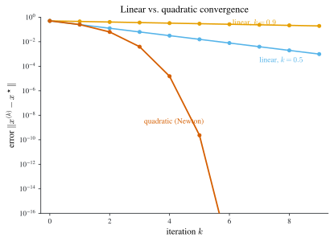

8 Nonlinear Equations & Optimization
\[ \newcommand{\R}{\mathbb{R}} \newcommand{\C}{\mathbb{C}} \newcommand{\N}{\mathbb{N}} \newcommand{\E}{\mathbb{E}} \newcommand{\eps}{\varepsilon} \newcommand{\abs}[1]{\left\lvert #1 \right\rvert} \newcommand{\norm}[1]{\left\lVert #1 \right\rVert} \newcommand{\ninf}[1]{\left\lVert #1 \right\rVert_{\infty}} \newcommand{\ntwo}[1]{\left\lVert #1 \right\rVert_{2}} \newcommand{\none}[1]{\left\lVert #1 \right\rVert_{1}} \newcommand{\inner}[2]{\left\langle #1,\, #2 \right\rangle} \newcommand{\bigO}{\mathcal{O}} \newcommand{\dd}{\mathrm{d}} \newcommand{\diff}[2]{\frac{\mathrm{d} #1}{\mathrm{d} #2}} \newcommand{\pdiff}[2]{\frac{\partial #1}{\partial #2}} \newcommand{\spec}{\rho} \newcommand{\cond}{\kappa} \newcommand{\Span}{\operatorname{span}} \newcommand{\rank}{\operatorname{rank}} \newcommand{\tr}{\operatorname{tr}} \newcommand{\diag}{\operatorname{diag}} \newcommand{\argmax}{\operatorname*{arg\,max}} \newcommand{\argmin}{\operatorname*{arg\,min}} \newcommand{\defeq}{:=} \]
Every earlier chapter that solved an equation solved a linear one: interpolation coefficients, spline curvatures, least-squares normal equations, and the linear systems of Chapter 4 and Chapter 5 are all \(Ax=b\). Most equations in practice are not linear, and there is no finite formula for their roots. What we have instead is iteration: start from a guess and improve it repeatedly, hoping the sequence homes in on a solution. This chapter builds two such iterations — fixed-point iteration and Newton’s method — proves when they converge, and measures how fast. The speed question is the reason we must be careful with the word “order”: here it means order of convergence (how the error shrinks step to step), not the order of accuracy \(\bigO(h^p)\) of a discretization from Chapter 2. The two are different ideas and the notes never conflate them (see Notation).
8.1 General nonlinear equations
A general system of \(n\) nonlinear equations in \(n\) unknowns is the problem of solving \[ F(x)=0,\qquad F:\R^n\to\R^n . \tag{8.1}\] It is useful to view \(F\) as a stack of scalar-valued coordinate functions \(f_i:\R^n\to\R\), \[ F(x)=\begin{pmatrix} f_1(x)\\ \vdots\\ f_n(x)\end{pmatrix}, \] so that Equation 8.1 is the simultaneous system \(f_1(x)=\dots=f_n(x)=0\). Unlike the linear case, such a system may have any number of solutions — none, one, or many — and there is no direct solver. We therefore look for iterative methods that, from an initial guess, converge to some solution (usually the one nearest the guess), assuming one exists.
Two special cases anchor everything that follows.
- Linear equations are the case \(F(x)=Ax-b\), treated at length in Chapters 4–5. Newton’s method (Section 8.3) will reduce a nonlinear solve to a sequence of linear solves, so the linear machinery is a building block, not a separate world.
- Optimization. Minimizing (or otherwise finding critical points of) a scalar objective \(u:\R^n\to\R\) means solving \(\nabla u(x)=0\), i.e. taking \(F=\nabla u\). The sharpest guarantees hold when \(u\) is strictly convex — its Hessian \(\nabla^2 u(x)=\bigl[\partial^2 u/\partial x_i\partial x_j\bigr]\) is positive definite for all \(x\) — a case we return to in Section 8.2.4.
Nonlinear systems also arise from implicit time-stepping for stiff ODEs (Chapter 3), from discretized nonlinear PDEs, and countless other settings; the two methods below are the workhorses for all of them.
8.2 Fixed-point iteration
From roots to fixed points
Definition 8.1 (Fixed point) Given \(G:\R^n\to\R^n\), a point \(x\) is a fixed point of \(G\) if \(G(x)=x\).
The idea of fixed-point iteration is to recast the root problem \(F(x)=0\) as a fixed-point problem \(G(x)=x\) whose solutions are the same points. One systematic way to build such a \(G\): pick any scalar \(\eps\neq 0\) and set \[ G(x)\defeq x-\eps\,F(x). \tag{8.2}\] Then \[ G(x)=x\iff x-\eps F(x)=x\iff \eps F(x)=0\iff F(x)=0, \] using \(\eps\neq0\) at the last step, so the fixed points of \(G\) are exactly the roots of \(F\), as desired. Any nonzero \(\eps\) “works” in this equivalence sense, but — crucially — different choices make the iteration below converge or diverge.
Given such a \(G\), fixed-point iteration is the sequence produced by feeding each output back in as the next input: \[ x^{(k+1)}=G(x^{(k)}),\qquad k=0,1,2,\dots, \tag{8.3}\] from an initial guess \(x^{(0)}\in\R^n\); equivalently \(x^{(k)}=\underbrace{G\circ\cdots\circ G}_{k\text{ times}}(x^{(0)})\). To analyze it we assume \(G\) is continuous: for every \(x\) and every sequence \(x^{(k)}\to x\) we have \(G(x^{(k)})\to G(x)\).
The first thing to check is that if the iteration converges at all, it converges to the right kind of point.
Proposition 8.1 (Limits of fixed-point iteration are fixed points) If \(G\) is continuous and the iterates Equation 8.3 satisfy \(x^{(k)}\to x\), then \(x\) is a fixed point of \(G\).
Proof. Take \(k\to\infty\) in \(x^{(k+1)}=G(x^{(k)})\). The left side tends to \(x\) (a convergent sequence and its shift share a limit); the right side tends to \(G(x)\) by continuity of \(G\). Hence \(x=G(x)\). \(\square\)
This settles what the limit is but not whether one exists. That is the content of the Banach theorem.
The Banach fixed-point theorem
When does Equation 8.3 converge? A clean sufficient condition is that \(G\) contracts distances. Throughout, fix a norm \(\norm{\cdot}\) on \(\R^n\) and let \(\norm{\cdot}\) also denote the induced (operator) norm on \(\R^{n\times n}\).
Definition 8.2 (Contraction map) A map \(G:\R^n\to\R^n\) is a contraction with parameter \(\alpha\in[0,1)\) if \[ \norm{G(x)-G(y)}\le\alpha\,\norm{x-y}\qquad\text{for all }x,y\in\R^n . \tag{8.4}\]
This is exactly a Lipschitz condition with constant \(L=\alpha<1\): \(G\) shrinks every pair of points by at least the fixed factor \(\alpha\). The proof needs one fact from analysis. Call a sequence \(\{x^{(k)}\}\) Cauchy if for every \(\eps>0\) there is \(K\) with \(\norm{x^{(k)}-x^{(l)}}\le\eps\) for all \(k,l\ge K\). The fact we use is that every Cauchy sequence in \(\R^n\) converges — \(\R^n\) under any norm is a complete metric space.
Theorem 8.1 (Banach fixed-point theorem) Suppose \(G:\R^n\to\R^n\) is a contraction with parameter \(\alpha\in[0,1)\). Let \(x^{(0)}\in\R^n\) and define \(x^{(k+1)}=G(x^{(k)})\) for \(k=0,1,2,\dots\). Then:
- the sequence converges, \(x^{(k)}\to x^\star\) for some \(x^\star\in\R^n\);
- \(x^\star\) is the unique fixed point of \(G\) in \(\R^n\); and
- the error obeys \[ \norm{x^{(k)}-x^\star}\le\frac{\alpha^{k}}{1-\alpha}\,\norm{x^{(1)}-x^{(0)}}. \tag{8.5}\]
Proof. Step 1: the iterates are Cauchy. For \(k\le l\), telescoping and the triangle inequality give \[ \norm{x^{(k)}-x^{(l)}}=\Bigl\|\textstyle\sum_{i=k}^{l-1}\bigl(x^{(i)}-x^{(i+1)}\bigr)\Bigr\| \le\sum_{i=k}^{l-1}\norm{x^{(i)}-x^{(i+1)}}. \] We bound each term. First note the \(j\)-fold composite \(G^{j}\) is itself a contraction with parameter \(\alpha^{j}\): by induction, for \(j\ge1\), \[ \norm{G^{j}(x)-G^{j}(y)}=\norm{G\bigl(G^{j-1}(x)\bigr)-G\bigl(G^{j-1}(y)\bigr)} \le\alpha\,\norm{G^{j-1}(x)-G^{j-1}(y)}\le\cdots\le\alpha^{j}\norm{x-y}. \] Since \(x^{(i)}=G^{i}(x^{(0)})\) and \(x^{(i+1)}=G^{i}(x^{(1)})\), this yields \[ \norm{x^{(i)}-x^{(i+1)}}=\norm{G^{i}(x^{(0)})-G^{i}(x^{(1)})}\le\alpha^{i}\norm{x^{(0)}-x^{(1)}}. \] Summing the geometric series and extending it to infinity, \[ \norm{x^{(k)}-x^{(l)}}\le\Bigl(\sum_{i=k}^{l-1}\alpha^{i}\Bigr)\norm{x^{(0)}-x^{(1)}} \le\Bigl(\sum_{i=k}^{\infty}\alpha^{i}\Bigr)\norm{x^{(0)}-x^{(1)}} =\frac{\alpha^{k}}{1-\alpha}\,\norm{x^{(0)}-x^{(1)}}. \tag{$\star$} \] The right side does not depend on \(l\) and, since \(\alpha\in[0,1)\), tends to \(0\) as \(k\to\infty\). Hence the sequence is Cauchy.
Step 2: convergence, uniqueness, and the bound. Being Cauchy in the complete space \(\R^n\), the sequence has a limit \(x^\star=\lim_k x^{(k)}\). A contraction is continuous, so by Proposition 8.1 the limit is a fixed point. It is the only one: if \(x^\star\) and \(y^\star\) were both fixed, then \(\norm{x^\star-y^\star}=\norm{G(x^\star)-G(y^\star)}\le\alpha\norm{x^\star-y^\star}\), and since \(\alpha<1\) this forces \(\norm{x^\star-y^\star}=0\). Finally, hold \(k\) fixed in \((\star)\) and let \(l\to\infty\); because the norm is continuous, \(\norm{x^{(k)}-x^{(l)}}\to\norm{x^{(k)}-x^\star}\), giving 1. \(\square\)
The theorem does more than guarantee convergence: 1 is a rate. The error decays geometrically, like \(\alpha^{k}\).
Because \(\log\norm{x^{(k)}-x^\star}\) falls linearly in \(k\) with slope \(\log\alpha<0\), numerical analysts call the geometric decay of 1 linear convergence — this is the \(q=1\) case of Definition 8.5 below. One reading: each new correct digit (a \(10\times\) error reduction) costs about the same number of iterations as the previous one. Newton’s method will do dramatically better, with superlinear convergence in which each new digit gets cheaper.
A sufficient condition for contraction
Verifying Equation 8.4 directly is awkward. A checkable condition uses first partial derivatives through the Jacobian.
Definition 8.3 (Jacobian) For \(G:\R^n\to\R^n\) with coordinate functions \(g_1,\dots,g_n\), the Jacobian \(DG(x)\) is the \(n\times n\) matrix-valued function \[ [DG(x)]_{ij}=\pdiff{g_i}{x_j}(x). \]
Theorem 8.2 (Jacobian bound implies contraction) If there is \(\alpha\in[0,1)\) with \(\norm{DG(x)}\le\alpha\) for all \(x\in\R^n\) (induced norm matching the vector norm), then \(G\) is a contraction with parameter \(\alpha\).
Proof. Fix \(x,y\) and connect them by the segment \(z(t)=(1-t)x+ty\), \(t\in[0,1]\), so \(z(0)=x\), \(z(1)=y\), and \(z'(t)=y-x\). By the fundamental theorem of calculus and the chain rule, \[ G(y)-G(x)=\int_0^1\diff{}{t}G(z(t))\,\dd t=\int_0^1 DG(z(t))\,[y-x]\,\dd t. \] Taking norms and passing the triangle inequality through the integral, \[ \norm{G(y)-G(x)}\le\int_0^1\norm{DG(z(t))\,[y-x]}\,\dd t \le\int_0^1\norm{DG(z(t))}\,\norm{y-x}\,\dd t \le\int_0^1\alpha\,\norm{y-x}\,\dd t=\alpha\,\norm{y-x}, \] using \(\norm{Mv}\le\norm{M}\norm{v}\) and the hypothesis \(\norm{DG(z(t))}\le\alpha\) along the segment. \(\square\)
Convergence of gradient descent for convex optimization
Return to minimizing \(u:\R^n\to\R\), i.e. solving \(F(x)=\nabla u(x)=0\). The fixed-point map Equation 8.2 with \(G(x)=x-\eps\nabla u(x)\) gives the update \[ x^{(k+1)}=x^{(k)}-\eps\,\nabla u(x^{(k)}), \tag{8.6}\] which is gradient descent with step size \(\eps>0\). We now use the contraction test to pin down when it converges and how fast.
Definition 8.4 (Strictly convex function) \(u\in C^2(\R^n)\) is strictly convex if its Hessian \(\nabla^2 u(x)=\bigl[\partial^2 u/\partial x_i\partial x_j\bigr]\) is positive definite for all \(x\).
The \(C^2\) assumption makes the Hessian exist and be symmetric (mixed partials commute). Strict convexity is equivalent to all eigenvalues of \(\nabla^2 u(x)\) being positive, and any critical point of a strictly convex \(u\) is its unique global minimizer. For a quantitative rate we assume a uniform two-sided eigenvalue bound.
There exist constants \(0<c\le C\) such that for all \(x\) the eigenvalues of \(\nabla^2 u(x)\) lie in \([c,C]\). The lower bound \(c>0\) is strong convexity; the upper bound \(C\) makes \(\nabla u\) Lipschitz. The ratio \(C/c\) acts as a condition number for the problem — it is the \(2\)-norm condition number \(\cond_2\) (Definition 4.6) of a positive-definite Hessian, the ratio of its largest to smallest eigenvalue — and it governs the speed below.
Theorem 8.3 (Gradient descent converges linearly) Under the standing assumption, gradient descent Equation 8.6 with step size \(\eps=1/C\) converges to the unique global minimizer \(x^\star\) of \(u\). Moreover \(G(x)=x-\tfrac1C\nabla u(x)\) is a contraction with parameter \(\alpha=1-c/C\), so by Theorem 8.1 \[ \ntwo{x^{(k)}-x^\star}\le\Bigl(1-\frac{c}{C}\Bigr)^{k}\frac{C}{c}\,\ntwo{x^{(1)}-x^{(0)}}. \tag{8.7}\]
Proof. By Theorem 8.2 it suffices to bound \(\ntwo{DG(x)}\). Differentiating \(G(x)=x-\tfrac1C\nabla u(x)\) gives \[ DG(x)=I_n-\frac1C\,\nabla^2 u(x). \] If \(\lambda\) is an eigenvalue of \(\nabla^2 u(x)\), then \(1-\lambda/C\) is the corresponding eigenvalue of \(DG(x)\). Since \(c\le\lambda\le C\), we get \(c/C\le\lambda/C\le1\), hence every eigenvalue of \(DG(x)\) lies in \([\,0,\,1-c/C\,]\). Now \(DG(x)\) is symmetric (as \(\nabla^2 u\) is), so its \(2\)-norm equals its spectral radius (Definition 5.4), \[ \ntwo{DG(x)}=\spec(DG(x))=\max_i\abs{\lambda_i(DG(x))}=1-\frac{c}{C}, \] because the eigenvalues sit in \([0,1-c/C]\) with \(0\le1-c/C<1\). Thus \(\ntwo{DG(x)}\le\alpha\) with \(\alpha=1-c/C\in[0,1)\), so \(G\) is a contraction and Theorem 8.1 applies; Equation 8.7 is 1 with \(1/(1-\alpha)=C/c\). \(\square\)
If the condition number \(C/c\) is large, then \(\alpha=1-c/C\) is close to \(1\) and convergence is slow — the ill-conditioned case in Figure 8.1. This is the fundamental limitation of plain gradient descent, and the motivation for the second-derivative method of the next section.
8.3 Newton’s method
Motivation and algorithm
Gradient descent uses only first-order information and pays for it with a condition-number-limited linear rate. Newton’s method uses the derivative of \(F\) itself. The idea is to alternate two steps: linearize the equations near the current guess, then solve the linear system for the next guess.
Near a guess \(x^{(k)}\), the first-order multivariate Taylor expansion is \[ F(x)\approx F(x^{(k)})+DF(x^{(k)})\,(x-x^{(k)}), \] with \(DF\) the Jacobian of \(F\) (Definition 8.3). Replacing \(F\) by this linearization in \(F(x)=0\) gives the linear system \(0=F(x^{(k)})+DF(x^{(k)})(x-x^{(k)})\); solving it (when \(DF(x^{(k)})\) is invertible) and calling the solution \(x^{(k+1)}\) yields Newton’s method: \[ x^{(k+1)}=x^{(k)}-DF(x^{(k)})^{-1}F(x^{(k)}). \tag{8.8}\] In the scalar case \(n=1\) this is the familiar \[ x^{(k+1)}=x^{(k)}-\frac{F(x^{(k)})}{F'(x^{(k)})}. \] For optimization, \(F=\nabla u\) has Jacobian \(DF=\nabla^2 u\), so Newton’s method minimizes \(u\) via \[ x^{(k+1)}=x^{(k)}-\nabla^2 u(x^{(k)})^{-1}\nabla u(x^{(k)}), \] which for \(n=1\) reads \(x^{(k+1)}=x^{(k)}-u'(x^{(k)})/u''(x^{(k)})\).
In practice one never forms the inverse \(DF(x^{(k)})^{-1}\) — that is an \(\bigO(n^3)\), potentially unstable, and wasteful operation. Instead, compute the Newton step \(y\) as the solution of a linear system, exactly the \(Ax=b\) problem of Chapter 4:
Given \(x^{(0)}\) and a maximum count \(m\) (or a stopping tolerance):
- set \(x\leftarrow x^{(0)}\);
- for \(i=1,\dots,m\) (or until convergence):
- assemble \(A\leftarrow DF(x)\) and \(b\leftarrow F(x)\);
- solve the linear system \(A\,y=b\) for the step \(y\) (LU with partial pivoting, Chapter 4);
- update \(x\leftarrow x-y\);
- optionally stop when \(\norm{y}\) or \(\norm{F(x)}\) falls below the tolerance.
Each Newton iteration thus costs one Jacobian evaluation and one linear solve. What buys back that per-step cost is the convergence order, which we define next.
Orders of convergence
Before analyzing Newton’s method we make precise how fast an iteration converges. This is the “order of convergence” sense of the word order, distinct from the order of accuracy of a discretization.
Definition 8.5 (Order of convergence) Let an iterative method produce \(x^{(k)}\to x^\star\). The method has order of convergence \(q\) (a positive integer) with rate \(M>0\) if \[ \frac{\norm{x^{(k+1)}-x^\star}}{\norm{x^{(k)}-x^\star}^{q}}\le M \qquad\Longleftrightarrow\qquad \norm{x^{(k+1)}-x^\star}\le M\,\norm{x^{(k)}-x^\star}^{q} \tag{$*$} \] holds for all \(k\). The case \(q=1\) is linear convergence, \(q>1\) is superlinear convergence, and \(q=2\) is quadratic convergence.
The two regimes behave qualitatively differently.
- Linear (\(q=1\)). Here \((*)\) reads \(\norm{x^{(k+1)}-x^\star}\le M\norm{x^{(k)}-x^\star}\), and we need \(M<1\) for it to force convergence — no matter how close \(x^{(0)}\) starts. So \(M<1\) is an implicit requirement when \(q=1\) (as with \(\alpha\) in Theorem 8.1).
- Superlinear (\(q>1\)). Now \(M<1\) is not needed: as long as \(x^{(0)}\) is close enough to \(x^\star\), inequality \((*)\) alone drives the error to zero. In practice a method may crawl at first and only reach its superlinear regime once the iterate enters a neighborhood of \(x^\star\); the definition captures this asymptotic behavior.
The next theorem quantifies just how fast superlinear convergence is: the error decays doubly exponentially, like \(e^{-\alpha q^{k}}\).
Theorem 8.4 (Superlinear convergence is doubly exponential) Suppose an iteration satisfies \((*)\) with \(q>1\). If the initial error obeys \(\norm{x^{(0)}-x^\star}\le M^{-1/(q-1)}\), then the method converges, and there exist constants \(\alpha,C>0\) with \[ \norm{x^{(k)}-x^\star}\le C\,e^{-\alpha q^{k}} . \tag{8.9}\] In fact one may take \(C=M^{-1/(q-1)}\) and \(\alpha=-\log\!\bigl(M^{1/(q-1)}\norm{x^{(0)}-x^\star}\bigr)\) (with \(\alpha>0\) requiring the strict inequality \(\norm{x^{(0)}-x^\star}<M^{-1/(q-1)}\)).
Proof. Write \(E_k=\norm{x^{(k)}-x^\star}\), so \((*)\) is \(E_{k+1}\le M E_k^{q}\). Taking logs, \(\log E_{k+1}\le b+q\log E_k\) with \(b=\log M\). Define the linear recursion \(a_0=\log E_0\), \(a_{k+1}=b+q\,a_k\); by induction \(\log E_k\le a_k\) for all \(k\) (the step is \(\log E_{k+1}\le b+q\log E_k\le b+q a_k=a_{k+1}\)). Solving the recursion, \[ a_k=q^{k}a_0+b\sum_{j=0}^{k-1}q^{j}=q^{k}a_0+b\,\frac{q^{k}-1}{q-1} =q^{k}\Bigl(a_0+\frac{b}{q-1}\Bigr)-\frac{b}{q-1}. \] Set \(\alpha\defeq-\bigl(a_0+\tfrac{b}{q-1}\bigr)\). With \(a_0=\log E_0\) and \(b=\log M\), the condition \(\alpha>0\) is \(\log\!\bigl(E_0 M^{1/(q-1)}\bigr)<0\), i.e. \(E_0<M^{-1/(q-1)}\) — the hypothesis. Then \(\log E_k\le a_k=-\alpha q^{k}-\tfrac{b}{q-1}\), and exponentiating gives \(E_k\le C e^{-\alpha q^{k}}\) with \(C=e^{-b/(q-1)}=M^{-1/(q-1)}\). Since \(\alpha>0\) and \(q>1\), the exponent \(-\alpha q^{k}\to-\infty\), so \(E_k\to0\). \(\square\)
The contrast is stark: linear convergence adds a fixed number of digits per step, while quadratic convergence roughly doubles the number of correct digits each step. Figure 8.1 shows both on a log scale, where linear convergence is a straight line and quadratic convergence bends sharply downward.

Local convergence of Newton’s method
We can now state and prove that Newton’s method converges quadratically, provided we start close enough and the Jacobian is nonsingular at the root.
Theorem 8.5 (Local quadratic convergence of Newton’s method) Suppose the coordinate functions of \(F:\R^n\to\R^n\) are all twice continuously differentiable. Let \(x^\star\) solve \(F(x)=0\) and suppose \(DF(x^\star)\) is invertible. Then for any initial guess \(x^{(0)}\) sufficiently close to \(x^\star\), Newton’s method Equation 8.8 converges quadratically to \(x^\star\).
The invertibility hypothesis is a nondegeneracy condition: in the scalar case it is \(F'(x^\star)\neq0\) (the root is simple), and for optimization (\(F=\nabla u\)) it says \(\nabla^2 u(x^\star)\) is positive definite — the minimizer is not “flat” in any direction. Where it fails, Newton’s method loses its quadratic rate.
Proof. We prove the scalar case \(n=1\); the general case is identical in spirit using multivariate Taylor expansion and matrix norms. Since \(F'(x^\star)\neq0\) and \(F'\) is continuous (\(F\in C^2\)), there are \(\eps>0\) and \(\delta>0\) with \(\abs{F'(x)}\ge\eps\) on \(I\defeq(x^\star-\delta,x^\star+\delta)\); and \(F''\) is continuous, hence bounded, \(\abs{F''(x)}\le C\) on \(I\). Put \(M\defeq C/(2\eps)\) and assume \(x^{(0)}\) close enough that \(E_0=\abs{x^{(0)}-x^\star}\le\min\{\delta,1/M\}\), so \(x^{(0)}\in I\).
Assume inductively \(x^{(k)}\in I\). Expand \(F\) about \(x^{(k)}\) to first order with Lagrange remainder and evaluate at \(x^\star\): \[ F(x^\star)=F(x^{(k)})+F'(x^{(k)})\bigl(x^\star-x^{(k)}\bigr) +\tfrac12 F''(\xi^{(k)})\bigl(x^\star-x^{(k)}\bigr)^2, \] for some \(\xi^{(k)}\) between \(x^\star\) and \(x^{(k)}\), so \(\xi^{(k)}\in I\). Since \(F(x^\star)=0\) and \(F'(x^{(k)})\neq0\), divide by \(F'(x^{(k)})\) and rearrange: \[ -\frac{\tfrac12 F''(\xi^{(k)})(x^\star-x^{(k)})^2}{F'(x^{(k)})} =\frac{F(x^{(k)})}{F'(x^{(k)})}+\bigl(x^\star-x^{(k)}\bigr) =x^\star-\Bigl[x^{(k)}-\frac{F(x^{(k)})}{F'(x^{(k)})}\Bigr] =x^\star-x^{(k+1)}, \] recognizing the Newton update Equation 8.8 in the bracket. Taking absolute values and using \(\abs{F''(\xi^{(k)})}\le C\), \(\abs{F'(x^{(k)})}\ge\eps\), \[ \abs{x^{(k+1)}-x^\star}\le\frac{C}{2\eps}\,\abs{x^{(k)}-x^\star}^2=M\,\abs{x^{(k)}-x^\star}^2, \] which is \((*)\) with \(q=2\). Moreover \(E_{k+1}\le M E_k^2=(M E_k)E_k\le(M E_0)E_k\le E_k\), so the error is nonincreasing and \(x^{(k+1)}\in I\), closing the induction. With \((*)\) holding for all \(k\) and \(q=2>1\), Theorem 8.4 gives convergence, and the order is quadratic. \(\square\)
Quadratic convergence is the payoff for Newton’s per-step cost: near the root, a handful of iterations reach machine precision, in contrast to the many steps a linearly convergent method spends per digit. The price is locality (a poor initial guess may diverge) and the need for the Jacobian and a linear solve each step — trade-offs addressed by globalization strategies and quasi-Newton methods (which approximate \(DF\) from successive function values), and by the broader optimization toolkit of Lagrangian duality, augmented-Lagrangian/ADMM splitting, and the like, beyond our scope here.
8.4 Chapter summary
- A nonlinear system \(F(x)=0\) with \(F:\R^n\to\R^n\) (Equation 8.1) has no direct solver; we iterate from a guess. Optimization is the special case \(F=\nabla u\), best-behaved when \(u\) is strictly convex (Definition 8.4).
- Fixed-point iteration \(x^{(k+1)}=G(x^{(k)})\) recasts roots of \(F\) as fixed points of \(G(x)=x-\eps F(x)\) (Definition 8.1); a convergent iteration lands on a fixed point (Proposition 8.1).
- The Banach fixed-point theorem (Theorem 8.1): a contraction (Definition 8.2) has a unique fixed point, the iteration converges to it, and the error decays like \(\alpha^k\)
- — linear convergence. A checkable sufficient condition is \(\norm{DG(x)}\le\alpha<1\) (Theorem 8.2).
- Gradient descent \(x^{(k+1)}=x^{(k)}-\tfrac1C\nabla u(x^{(k)})\) is a contraction with parameter \(1-c/C\) (Theorem 8.3); the condition number \(C/c\) sets the rate, and a large one makes it slow.
- Newton’s method (Equation 8.8) linearizes \(F\) and solves the linear system \(DF(x)\,y=F(x)\) each step. It converges quadratically near a root where \(DF(x^\star)\) is invertible (Theorem 8.5).
- Order of convergence \(q\) (Definition 8.5): \(q=1\) linear (needs rate \(M<1\)), \(q=2\) quadratic; for \(q>1\) the error falls doubly exponentially, \(\bigO(e^{-\alpha q^{k}})\) (Theorem 8.4), so each step roughly doubles the correct digits (Figure 8.1).